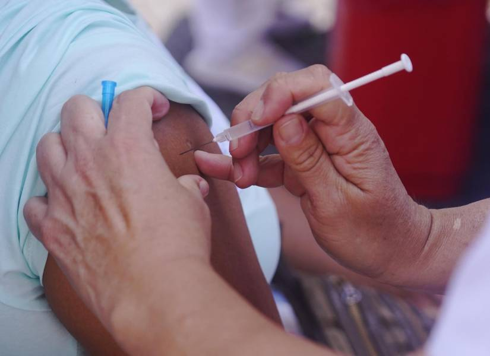

Un recorrido histórico con referencias según normas APA 7ª edición
La tos ferina es una enfermedad conocida desde hace siglos. Los primeros registros clínicos datan del siglo XVI, cuando se describió como una tos violenta y persistente en niños (Cherry, 2019). Sin embargo, la bacteria causante Bordetella pertussis fue aislada por primera vez en 1906 por los científicos Jules Bordet y Octave Gengou, lo que permitió un mejor entendimiento de su etiología.
Antes de la introducción de la vacunación en la década de 1940, la tos ferina era una causa importante de mortalidad infantil en todo el mundo. En los siglos XIX y XX, múltiples epidemias afectaron a comunidades enteras, con altas tasas de letalidad en niños menores de un año (Cherry, 2019; WHO, 2018).
| Año | Evento | Impacto |
|---|---|---|
| 1906 | Descubrimiento de Bordetella pertussis | Identificación del agente causal |
| 1940s | Introducción de la vacuna DTP | Reducción significativa de casos y muertes |
| 1990s | Desarrollo de vacunas acelulares | Mejor perfil de seguridad y menos efectos secundarios |
| 2000s | Reemergencia de casos en algunos países | Indicó necesidad de refuerzos y vigilancia |
Con la mejora en las técnicas de cultivo y desarrollo de vacunas, la prevención de la tos ferina ha avanzado considerablemente. Las vacunas acelulares, introducidas en los años 90, son más seguras y eficaces (Melvin, Scheller, Miller, & Cotter, 2014). El tratamiento antibiótico también ha evolucionado para reducir la transmisión y severidad.
Para conocer más sobre la historia de la tos ferina, vea este video documental: